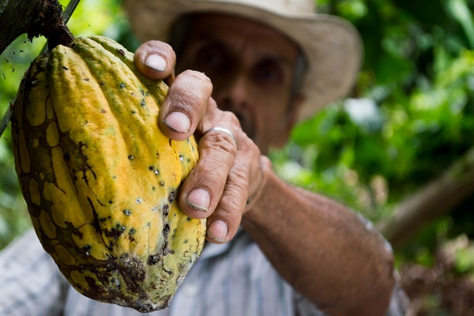

Discovery
Many historians believe that cocoa was first discovered by the Olmecs sometime around 1500 - 400BC. They were the first to cultivate the bean in equatorial Mexico. Which was soon followed by the Mayans and the Aztecs. The cocoa bean was so important to these cultures that it was used as a currency.
Commercialization
During the AGE OF DISCOVERY a man named Hernando Cortez drank cocoa with Montezuma,The Aztec Emperor, and brought it back to the Spanish court in 1528. Following the wars against the native tribes and the downfall of the Aztecs, Cortez intensified cultivation efforts. Soon the Spanish court fell in love with this drink after the Discorvery of adding sugar, vanilla, cinnamon and pepper to the drink.
Europe
During the 17th century cocoa started it's arrival at other ports, and soon began dominating everyone's taste palete. It was first adopted by the French following a royal marriage to a spanish princess. In 1650, England started recieving cocoa along with tea from China and Coffee from the middle east. Quickly the love and want of cocoa spread like wildfire.
Industrial Revolution
Spain after being the first exporters of cocoa opened the first factories in 1780. Followed by Germany and Switzerland. Cocoa was also being uprooted from where it was being harvested and being planted now in Africa. Its first successful plant was in Sao Tome and Principe. As the migration happened plantations spread accross Africa. With this change the industrialzation of cocoa took it from being a delicacy only for royals to the common man.